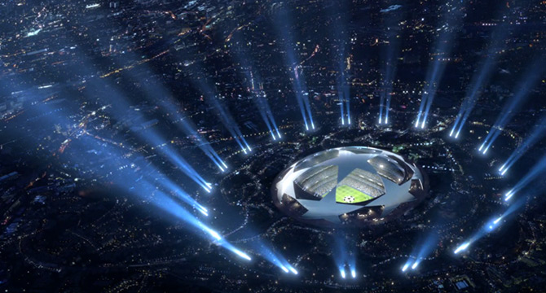

Este año va a haber una gran novedad en la Champions League, este año jugará como equipo invitado el Al-Nassr de Cristiano Ronaldo. Las reglas serán iguales en las que se disputará primero una fase de grupos con 4 equipos en cada grupo, los dos primeros de grupo clasificarán a octavos de final, los terceros jugarán la Europa League y los cuartos quedan eliminados de toda competición europea. Se espera que el Al-Nassr haga un gran torneo ya que cuentan con Cristiano Ronaldo al que se le da especialmente bien esta competición.
Esta es una de mis actuaciones en esta competición más recordadas